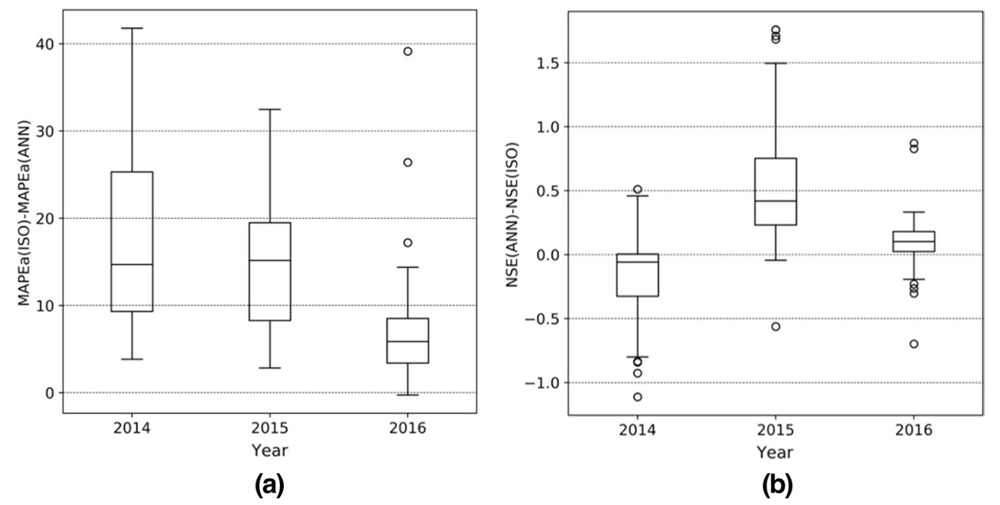

Streamflow forecasting for interconnected hydropower systems
Forecasting water availability helps hydropower operators coordinate generation and evaluate electricity-market conditions. In a cascade of reservoirs, observations from one part of the river system can help predict flows elsewhere. This project develops neural-network forecasts of natural streamflow up to 14 days ahead and a systematic way to select useful information across the network.
The work grew from my streamflow modeling and automation project with Marangon Consulting & Engineering, which covered more than 140 Brazilian hydropower plants. The published study evaluates forecasts at 55 plants in the Paraná Basin.

Figure 5 of de Faria et al. (2022) shows the plants and river connections in the case study. As upstream branches converge, flow records from related stations can provide useful inputs for forecasts elsewhere in the network.
Learning across the river network
The study compares optimizers, activation functions, weight initialization, loss functions, and regularization for multilayer perceptrons. An input-selection algorithm screens historical streamflows for relevance to each target plant and removes strongly redundant information.
The models use daily records from 2000–2016, divided chronologically into training, development, and test periods. Candidate inputs include up to 30 days of historical flow from upstream and downstream plants. A separate experiment at five plants tests whether historical rainfall, including totals accumulated over several days, adds useful information beyond the flow records.
Forecast performance
Suitable weight initialization avoided divergent training in the tested Adam/ReLU configuration and reduced training time by at least 52% in the Adam comparisons. Adam with a hyperbolic-tangent activation performed well overall.
The neural networks achieved lower percentage errors for every plant and year in the 2014–2016 operator comparison. They performed better on Nash–Sutcliffe efficiency for 93% of plants in 2015 and 82% in 2016, while the operator performed better on that metric for most plants in 2014.
Historical rainfall did not consistently improve forecasts in the five-plant experiment. The choice of loss function also affected the balance between following sudden flow peaks and maintaining accuracy during low-flow periods.

Figure 7 of de Faria et al. (2022) compares percentage error on the left and Nash–Sutcliffe efficiency on the right. Positive values favor the neural networks in both panels. In 2014, lower percentage errors coincided with weaker performance on Nash–Sutcliffe efficiency, which is more sensitive to flow peaks.
My role and study scope
I worked with Anderson de Queiroz on data preparation, collection, and analysis, and wrote the first manuscript draft. The broader team contributed to study design and review. Together, we developed a repeatable modeling and input-selection procedure for interconnected plants.
The evaluation covers natural flows in the Paraná Basin over a two-week forecast horizon. The rainfall findings apply to historical observations at five plants; forecast rainfall, other basins, and different horizons may give different results.